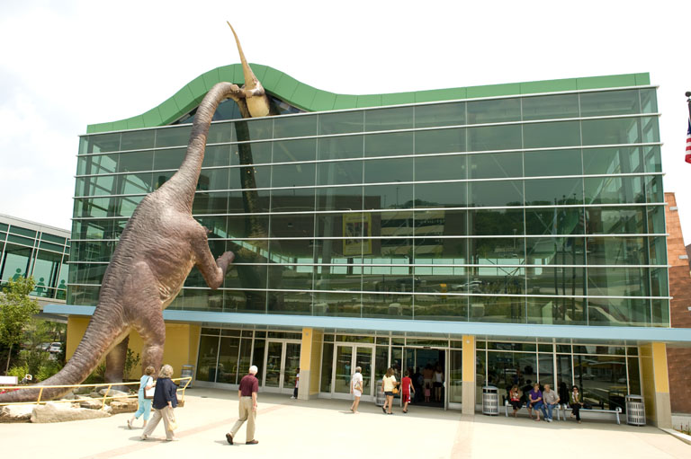

Local Attractions
Indianapolis, being the bustling city that it is, has many attractions, both great and small. These places are often crowded, though still beautiful to visit and enjoy.  The architecture, the people, the parks, fountains, cityscapes, landscapes, canals, rivers, and beaches--all for the people, the public. Enjoy tours, both walking and cycling, that will take you on adventures across an unfamiliar city and to places yet unexplored. Museums, cheap and awe-inspiring, to take the breath away from you, and take you back into the past at the same time. Discover the world's best children's museum, Native American culture, and Kurt Vonnegut's original typewriter. Experience the scenic wonders of a city entrenched in tradition yet constantly at the forefront of innovation. From the fabled Indy 500 to skyline views, the BPA members of 2014 truly have the honor of visiting here, the happy city of Indianapolis, for nationals next year.